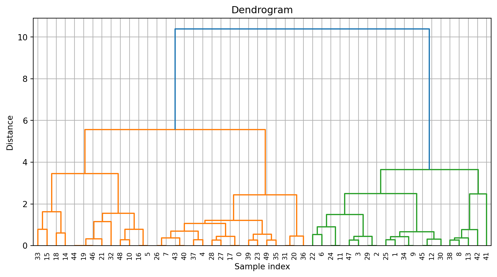

import pandas as pd
import altair as alt
from sklearn.datasets import load_iris
from sklearn.cluster import AgglomerativeClustering
from sklearn.preprocessing import StandardScaler
from sklearn.pipeline import Pipeline
from scipy.cluster.hierarchy import dendrogram,linkage
import matplotlib.pyplot as pltCategorical pipeline
Importamos librerias
Cargar dataset
iris = load_iris()
X= pd.DataFrame(iris.data[0:50],columns=iris.feature_names)[['sepal length (cm)','sepal width (cm)']]Pipeline
pipeline = Pipeline([
('scaler',StandardScaler()),
('agglo',AgglomerativeClustering(n_clusters=2))
])Fit
labels = pipeline.fit_predict(X)
labelsarray([0, 1, 1, 1, 0, 0, 1, 0, 1, 1, 0, 1, 1, 1, 0, 0, 0, 0, 0, 0, 0, 0,
1, 0, 1, 1, 0, 0, 0, 1, 1, 0, 0, 0, 1, 0, 0, 0, 1, 0, 0, 1, 1, 0,
0, 1, 0, 1, 0, 0])Visualizar los clusters
Creación de dataframe para la vizualización
X_scaled = pipeline.named_steps['scaler'].transform(X)
df_viz = pd.DataFrame(X_scaled, columns=['Feature1','Feature2'])
df_viz['clusters'] =labels.astype(str)
df_viz['index'] = X.index.astype(str)
df_viz = df_viz.dropna(subset=['Feature1', 'Feature2', 'clusters', 'index'])Visualización
scatter = alt.Chart(df_viz).mark_circle(size=40).encode(
alt.X('Feature1'),
alt.Y('Feature2'),
alt.Color('clusters'),
tooltip=['Feature1','Feature2','index']
).interactive()
texto = alt.Chart(df_viz).mark_text(
align= 'left',
dx = 5,
baseline='middle'
).encode(
alt.X('Feature1'),
alt.Y('Feature2'),
text='index'
)
scatter + textoalt.renderers.enable('default')
df = pd.DataFrame({'x': [1, 2, 3], 'y': [4, 5, 6]})
alt.Chart(df).mark_point().encode(x='x', y='y')Visualizar dendogram
linked = linkage(X_scaled, method='ward')Dendograma
plt.figure(figsize=(10, 5))
dendrogram(linked,
orientation='top',
distance_sort='descending',
show_leaf_counts=False)
plt.title("Dendrogram")
plt.xlabel("Sample index")
plt.ylabel("Distance")
plt.grid(True)
plt.show()